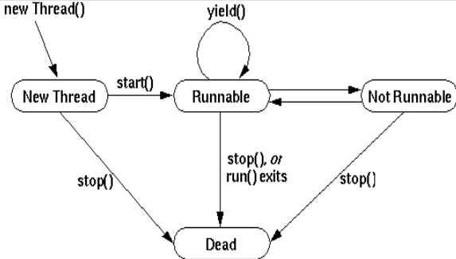
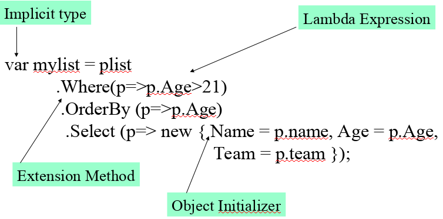

Software Cloud 3
Table of Contents
1 Properties
1.1 Creation
class SomeClass { private int numberTwo; // simple property public int Number { get; set; } // assining logic to get and set public int NumberTwo { get { return numberTwo; } set { numberTwo = value; } // "value" is a keyword } }
1.2 Automatic Properties and Object Initializers
class Counter { public Counter() { // automatic properties Name = "Weeks"; Number = 2; } public Counter(string n, int num) { Name = n; Number = num; } public static Main() { // works even if there is a designated constructor Counter c = new Counter { Name = "Days"; Number = 6; } } }
2 Extension Methods
- Given
Counterclass
class Counter { public string name; public int Number { get; set; } public void increment() { this.Number++; } public int readValue() { return this.Number; } }
- We can add additional methods to the
Counterclass via Extension Methods - Declare a
static classcalledFunctions, and pass in to thestaticmethodsthis ClassNameas the first parameter to extend the functions in this particular class
static class Functions { public static bool isEven(this Counter c) { if (c.Number % 2 == 0) return true; else return false; } public static bool isEqual(this Counter c, int val) { if (c.Number == val) return true; else return false; } }
3 Delegates
3.1 Definition and Creation
- Allow to create a type definition for a method
- It enables C# to operate in a functional paradigm
- Delegate is declared with the keyword
delegatepublic delegate void Operation(): Allows to create delegates that return no value and accept no parameterspublic delegate int Operation(string s): Allows to create delegates that return an integer as a value and accepts a string as a parameter
3.2 Lambda Expression example
- Example on counting array values greater than 2
int[] a = { 2, 6, 4, 3 }; // e => e > 2; i.e. set of all e such that e > 2 int output = a.Count(e => e > 2); Console.WriteLine("Output " + output); // 3
- Example on filtering with
Where
int[] a = { 2, 6, 4, 3 }; var output = a.Where(e => e > 2); foreach(var v in output) Console.WriteLine("Val = " + v);
- Example of implementing a filer
delegate bool DelFn(int a); static class Functions { public static int[] Filter(this int[] arr, DelFn f) { ArrayList res = new ArrayList(); foreach (int el in arr) { if (f(el)) res.Add(el); } return res.OfType<int>().ToArray(); // cast back to int[] } }
3.3 Example 1
- Task: extend an array with a sum function and create a delegate
- Step 1, create the max function
delegate int SumFn(int a); static class Functions { // Sum accepts the array and a delegate function public static int Sum(this int [] a, SumFn fn) { int sum = 0; foreach(int el in a) sum += fn(el); // apply the delegate function return sum; } }
- Step 2, provide a lambda expression for the
Summethod that complies with theSumFndelegate
class Program { static void Main(string[] args) { int[] a = { 2, 6, 4, 3 }; int output = a.Sum(e => e * 2); // each element multiplied by 2 Console.WriteLine("output = " + output); } }
4 Threading
4.1 Lifecycle

4.2 ThreadStart delegate
- Allows to use the
+operator to "put" many threads together for execution. It basically works like any other delegate - Allows to pass in data/arguments to a thread by the means of an anonymous function (lambda)
class ThreadTest { static void Main() { // create the delegate ThreadStart ts = () => { Console.Write("y"); // can pass in arguments }; // Add another ts += new ThreadStart(WriteZ); // Create the thread Thread t = new Thread(ts); t.Start(); Console.WriteLine(); Console.WriteLine("x"); } static void WriteZ() { Console.Write("z"); } }
4.3 Example of a simple Thread
class Program { public static void Main(string[] args) { Thread t1 = new Thread(incrementer); // pass in a method as an argument Thread t2 = new Thread(new ThreadStart(decrementer)); // or use ThreadStart t1.Start(); // start the thread t2.Start(); t1.Join(); // wait for both threads to finish t2.Join(); } static void incrementer() { for (int i = 0; i < 6; i++) { Console.WriteLine("Incrementer: {0}", i); Thread.Sleep(1000); } } static void decrementer() { for (int i = 6; i > 0; i--) { Console.WriteLine("Decrementer: {0}", i); Thread.Sleep(1000); } } }
4.4 Locks and Synchronization via the Monitor
- Example on a Producer-Consumer type object
class NumberStore { private int contents = 0; private Boolean ready = false; private object theLock = new Object(); public int get() { // block if theLock is used lock (theLock) { while (!ready) { // Monitor.Wait just like Java's wait() Monitor.Wait(theLock, Timeout.Infinite); } ready = false; // Monitor.Pulse just like Java's notify() // Monitor.PulseAll just like Java's notifyAll() Monitor.Pulse(theLock); return contents; } } public void put(int value) { lock (theLock) { while (ready) { Monitor.Wait(theLock, Timeout.Infinite); } contents = value; ready = true; Monitor.Pulse(theLock); } } }
5 Partial Classes
- Allow to split a single class into multiple
- When instantiated it all compiles into a single class
Best shown as an example, here as an
MoneyStoreclass- Part 1
partial class MoneyStore { private int balance = 100; public void withdraw(int amt) { balance -= amt; } public void print() { Console.WriteLine("B:" + balance); } }
- Part 2
partial class MoneyStore { private int limit = 1000; public void deposit(int amt) { if (balance + amt > limit) Console.WriteLine("Error"); else balance += amt; } }
6 LINQ
6.1 Query keywords
from: Specifies a data source and a range variable (similar to an iteration variable).where: Filters source elements based on one or more Boolean expressions separated by logical AND and OR operators ( && or || ).select: Specifies the type and shape that the elements in the returned sequence will have when the query is executed.group: Groups query results according to a specified key value.into: Provides an identifier that can serve as a reference to the results of a join, group or select clause.orderby: Sorts query results in ascending or descending order based on the default comparer for the element type.join: Joins two data sources based on an equality comparison between two specified matching criteria.let: Introduces a range variable to store sub-expression results in a query expression.in: Contextual keyword in a join clause.on: Contextual keyword in a join clause.equals: Contextual keyword in a join clause.by: Contextual keyword in a group clause.ascending: Contextual keyword in an orderby clause.descending: Contextual keyword in an orderby clause.
6.2 Available built-in functions
MaxMinAverageCountSum
6.3 Basic expression Syntax
var output = from <SELECTOR> in <INPUT_DATA> where <EXPRESSION> select <SELECTOR>;
6.4 Example, simple orderby with column selection and renaming
- Given the following data
Player[] plist = { new Player{ Name = "Giggs", Age = 33, Team = "Manu" }, new Player{ Name = "Tevez", Age = 23, Team = "Manu" }, new Player{ Name = "Kuyt", Age = 29, Team = "Pool" }, new Player{ Name = "Torres", Age = 21, Team = "Pool" } };
- Get all players above the age of 21, order by age and rename the
Nameattribute toPlayer
var players = from p in plist where p.Age > 21 // in betwen 21 and 25 (p.Age > 21 && p.age < 25) orderby p.Age select new { Player = p.Name, Age = p.Age, Team = p.Team };
6.5 Example with built-in functions
- Given the same data as above
var maxAvg = new { myMax = plist.Max(w => w.Age), myAvg = plist.Average(w => w.Value) } Console.WriteLine("Max age {0}, Average age {1}", maxAvg.myMax, maxAvg.myAvg);
6.6 More complicated examples with Grouping, Joining and Unions
- Given the following data
Car[] carList = { new Car { Year = 1999, Price = 20000, Make = "VW", Model = "Passat" }, new Car { Year = 2005, Price = 30000, Make = "VW", Model = "Passat" }, new Car { Year = 2006, Price = 32000, Make = "VW", Model = "Boro"}, new Car { Year = 1998, Price = 10000, Make = "Honda", Model = "Civic"}, new Car { Year = 2007, Price = 30000, Make = "Honda", Model = "Civic"}, new Car { Year = 2006, Price = 28000, Make = "Honda", Model = "Accord"} }; Bike[] bikeList = { new Bike {Year = 2002, Price = 9000, Make = "Yamaha", Model = "Silverado"}, new Bike {Year = 2005, Price = 15000, Make = "Yamaha", Model = "Silverado"}, new Bike {Year = 2006, Price = 20000, Make = "Yamaha", Model = "V-max"}, new Bike {Year = 1997, Price = 1000, Make = "Honda", Model = "CRF150"}, new Bike {Year = 2007, Price = 9000, Make = "Honda", Model = "CRF150"}, new Bike {Year = 2006, Price = 18000, Make = "Honda", Model = "XR650"} }; Manufacturer[] manufacturerList = { new Manufacturer { Name = "VW", Nationality = "German", Year_founded = 1915 }, new Manufacturer { Name = "Honda", Nationality = "Japan", Year_founded = 1925 }, new Manufacturer { Name = "Yamaha", Nationality = "Japan", Year_founded = 1925 } };
- Grouping the car data
var carsGrouped = from c in carList group c by c.Make into g select new { Make = g.Key, myDearest = g.Max(w => w.Price), myCount = g.Count(), myAvg = g.Average(w => w.Price) };
- Joining cars and manufacturers
var carAndManufacturerJoin = from c in carList join m in manufacturerList on c.Make equals m.Name select new { Make = c.Make, Year = c.Year, Price = c.Price, Name = m.Name, Nationality = m.Nationality, YearFounded = m.Year_founded };
- Union, Intersection and Except of cars and bikes
var unionCar = from c in carList where (c.Year > 2000) select new { Year = c.Year, Price = c.Price, Model = c.Model }; var unionBike = from b in bikeList where (b.Year > 2000) select new { Year = b.Year, Price = b.Price, Model = b.Model }; var unionCarBike = unionBike.Union(unionCar); var intersectionCarBike = unionBike.Intersect(unionCar); var exceptCarBike = unionBike.Except(unionCar);
6.7 Using the dot notation

7 .NET Remoting
7.1 Server Setup
Step 1, Create an Interface for an Entity (Product in this case)
public interface ProductInterface { string getDescription(); }
Step 2, Create the Entity (Product)
- NOTE: Needs to extend the Interface and
MarshalByRefObject
public class Product : MarshalByRefObject, ProductInterface { string name = "Toaster!!!"; public string getDescription() { return name; } }
Step 3, Create Server
class Program { static void Main(string[] args) { ProductServer(); } static void ProductServer() { // Open TCP TcpChannel tcpChannel = new TcpChannel(9998); // Register the TCP ChannelServices.RegisterChannel(tcpChannel); // Get the Product as the Common Interface Type commonInterfaceType = Type.GetType("Product"); // Register the Interface RemotingConfiguration.RegisterWellKnownServiceType( commonInterfaceType, "MyToaster", // Path WellKnownObjectMode.SingleCall ); Console.WriteLine("Press ENTER to quit"); Console.ReadLine(); } }
7.2 Client Setup
Step 1, Use the same Interface as the server
public interface ProductInterface { string getDescription(); }
Step 2, Create the Client
class MyClient { public static void Main() { // Open TCP TcpChannel tcpChannel = new TcpChannel(); // Register TCP ChannelServices.RegisterChannel(tcpChannel); // Get the type of the Interface Type requiredType = typeof(ProductInterface); // Retrieve the object via the created route ProductInterface remoteObject = (ProductInterface) Activator.GetObject(requiredType, "tcp://localhost:9998/MyToaster"); // Call the Product's method via its interface Console.WriteLine(remoteObject.getDescription()); } }
8 Indexers
- Allow to add array like indexing to any class
class Vector { private int count = 4; private int[] arr = {3, 4, 6, 7}; // Indexer definition public int this[int index] { // provide a getter get { if (index < count) return arr[index]; return 0; } // provide a setter set { arr[index] = value; // value is a keyword of the setter } } } class Program { public static void Main(string[] args) { Vector v = new Vector(); v[1] = 8; // assign a value like to an array Console.WriteLine("idx 1: " + v[1]); } }
9 Dynamic Types
varprovides a form of casting, but the variable itself is still strongly typed
int x = 2; var v = x; // now x is of type 'int' v = "foo"; // error
dynamickeyword provides a way of having a dynamic types so the following example would not cause a compile time error
int x = 2; var v = x; // now x is of type 'int' v = "foo"; // error
- additionally a
dynamicobject can be made that tests if a method exists on the object withTryInvokeMember, if it does not exists an arbitrary value can be returned
public class MyDynamic : DynamicObject { // Faulty method invocation handler public override bool TryInvokeMember ( InvokeMemberBinder binder, object[] args, out object result ) { Console.WriteLine("I would have invoked: {0}", binder.Name); result = "dummy"; // return this dummy data return true; } public string NormalMethod() { Console.WriteLine("In NormalMethod"); return "normal"; } } class Program { public static void Main(string[] args) { dynamic obj = new MyDynamic(); Console.WriteLine(obj.NormalMethod()); // invoked normally Console.WriteLine(obj.HelloWorld()); // method does not exist } }
10 Design Patterns
10.1 Adapter
- Change the interface associated with an existing class
- It basically revolves around taking a class and adapting it to what we want it to do
- Say we have a simple
Counterclass, that can only increment and decrement by 1
class Counter { private int count; public Counter(int v) { count = v; } public void increment() { count++; } public void decrement() { count--; } public int readValue() { return count; } }
- But we want to be able to increment/decrement by an any value and use it as a
MoneyStoragetype class - First we define an Interface for it
public interface IContainer { void add(int i); bool remove(int i); int readAmount(); }
- Now we define the
MoneyStorageclass
public class MoneyStorage : IContainer { private Counter c; public MoneyStorage(int i) { c = new Counter(i); } public void add(int i) { for (int j = 0; j < i; j++) { c.increment(); } } public void remove(int i) { for (int j = 0; j < i; j++) { c.decrement(); } } public int readAmount() { return c.readValue(); } }
- Quite simple, really
10.2 Decorator
- Add additional functionality by adding more objects to the initial class
- Example on a simple class that prints out to the console a name
- Step 1, create the main domain class
class Display { private String name; // normal constructor public Display(String n) { name = n; } // constructor that accepts the same class type public Display(Display d) { name = d.name; } public virtual void print() { Console.WriteLine("\t" + name); } public virtual void setName(String n) { name = n; } }
- Step 2, define a
Decoratorthat extends theDisplay
class Decorator : Display { protected Display display; public Decorator(Display display) : base(display) { this.display = display; } }
- Step 3, define the first child
Decorator
class UpperLine : Decorator { // accept the main domain class in the constuctor public UpperLine(Display display) : base(display) { } // override the print method public override void print() { Console.WriteLine("*********************"); // but still call the main domain class' print as well display.print(); } public override void setName(String n) { display.setName(n); } }
- Step 4, define another
Decoratorchild
class LowLine : Decorator { public LowLine(Display display) : base(display) { } public override void print() { display.print(); Console.WriteLine("*********************"); } public override void setName(String n) { display.setName(n); } }
- Step 5, decorate the display class with an under-line and upper-line print out
class Program { static void Main(string[] args) { Display helloWorld = new Display("Hello World"); // decorate helloWorld with UpperLine and LowLine Display d = new UpperLine(new LowLine(helloWorld)); d.print(); } }
10.3 Factory
- Simple decision making class
- Returns one of several possible subclasses depending on the arguments provided
- Given a
Studentclass
abstract class Student { protected string name; protected int mark; protected int age; public Student(string s, int a) { name = s; age = a; mark = 0; } public void setMark(int m) { mark = m; } public abstract double getMark(); }
- And given the
MatureStudent,OldStudentandYoungStudentchild classes ofStudent
class MatureStudent : Student { public MatureStudent(string s, int a) : base(s, a) {} override public double getMark() { return mark * 1.1; } } class OldStudent : Student { public OldStudent(string s, int a) : base(s, a) {} override public double getMark() { return mark * 1.2; } } class OldStudent : Student { public OldStudent(string s, int a) : base(s, a) {} override public double getMark() { return mark; } }
- Now we define the student factory that returns a
Studentclass based on the age
class StudentFactory { public static Student getStudent(string name, int age) { if (age < 25) return new YoungStudent(name, age); else if (age < 50) return new MatureStudent(name, age); else return new OldStudent(name, age); } }
10.4 Singleton
- Ensure a single instance of a class
public class SingletonExample { private static SingletonExample instance; private SingletonExample() { } public static SingletonExample getInstance() { if (instance == null) instance = new SingletonExample(); return instance; } }
10.5 Twin
- Allows multiple inheritance
- Say we have two classes:
CounterandName
class Counter { public int Value { get; set; } public Counter(int v) { Value = v; } } class Name { public string Description; public Name(string d) { Description = d; } }
- And now we would like to have a
NamedCounter - We choose which class is going to be an instance variable and which is going to be the base (in this case the base is the
Nameclass)
class NamedCounter : Name { private Counter counter; public NamedCounter(int value, string name) : base(name) { // Name as base counter = new Counter(value); // counter as class attribute } public void PrintAllDetails() { Console.WriteLine("Name {0}, Counter {1}", base.Description, counter.Value); } public void ResetCounter() { counter.Value = 0; } public void ResetName() { base.Description = ""; } }
10.6 Visitor
- New functionality without modifying existing class
- Step 1, define the Visitor and Visitable interfaces
public interface IVisitor { void Visit(IVisitable visitable); } public interface IVisitable { void Accept(IVisitor visitor); }
- Step 2, provide a Visitable class, in this case
Counter
public class Counter : IVisitable { public int count { get; set; } public Counter(int c) { count = c; } public void Accept(IVisitor visitor) { // give the visitor my instance visitor.Visit(this); } public int readCount() { return count; } }
- Step 3, provide a Visitor class, in this case
MoreFunctions
public class MoreFunctions : IVisitor { private Counter external; public void Visit(IVisitable visitable) { // grab the visitable's instance external = (Counter) visitable; } public void resetCount() { external.count = 0; } }
- Step 4, Visitable accept the Visitor, and call the visitor's function
public class VisitorExample { public static void Main() { Counter counter = new Counter(20); MoreFunctions moreFunctions = new MoreFunctions(); counter.Accept(moreFunctions); // counter accept a visitor moreFunctions.resetCount(); // visitor reset the counter's counter Console.WriteLine(counter.readCount()); // outputs 0 } }